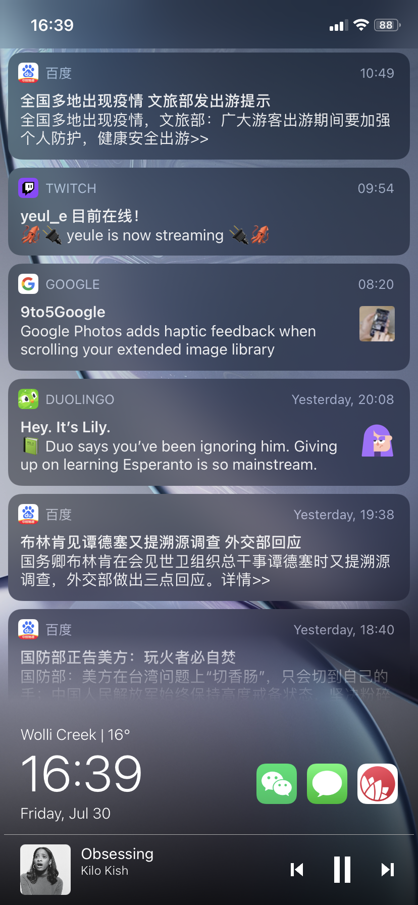
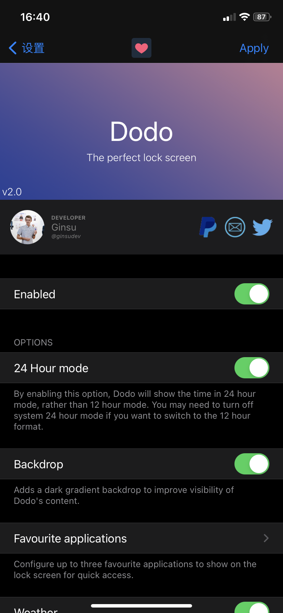
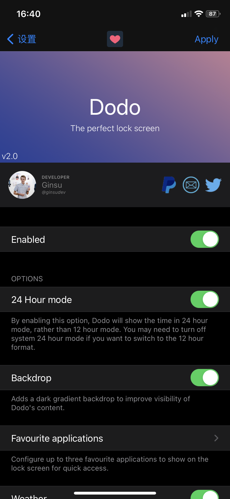
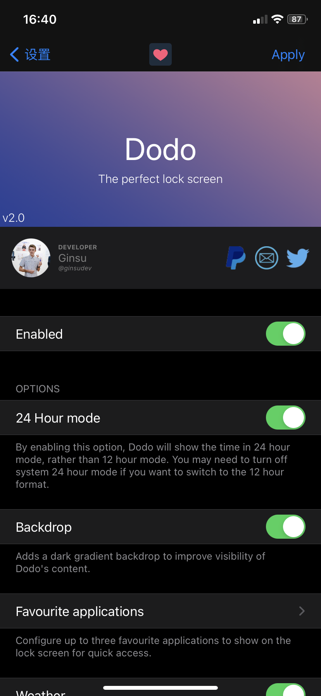

Twitter
Dodo
Ginsu
Compatibility: This package is compatible with iOS iOS 14.0 to 15.9.
 

Supports iOS 14+
Dodo
Dodo is the perfect Lock Screen tweak with everything you need. You can set up to 3 favourite applications to access quickly from the Lock Screen, receive media recommendations depending on what app was playing music previously and control music playback! You can also check the weather at ease.
如果你用的音乐软件能显示歌词的话，最好把那个显示歌词的功能关掉。
Features:
- Quick access to applications
- Media recommendations
- Media player
- Weather
- Beautiful design and preferences panel.
Contact
Information
Developer
Ginsu
Version
2.4.1
Compatibility
iOS 14.0 to 15.9
Section
Tweaks
2.4.1
Improvement: The device will now longer go to sleep while skipping/going back a song.